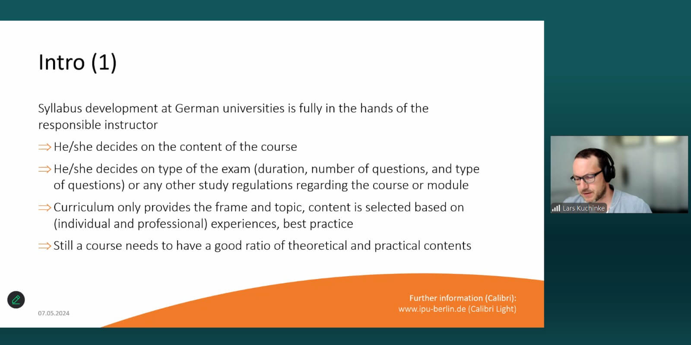
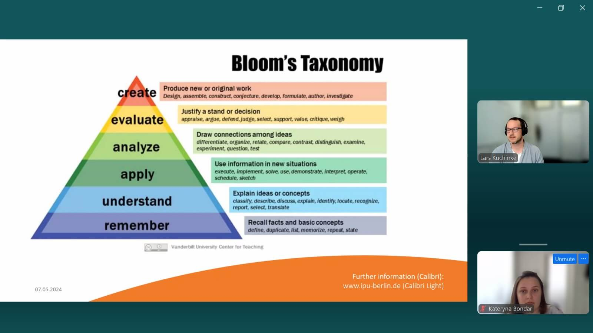

Webinar 3 "Germany's Syllabus Development Experience" at International Psychoanalytic University Berlin GmbH (May 7, 2024)
Speakers: Dr. Phil Langer and Dr. Lars Kuchinke from the International Psychoanalytic University Berlin GmbH.
Dr. Kuchinke's presentation sheds light on Germany's psychologist education system, highlighting its emphasis on openness, granting course authors full autonomy over content. Lecturers are esteemed as experts, entrusted by universities competing globally, where they integrate international psychological education trends. In German psychological education, achieving a delicate balance between theory and practice is paramount. This focus stems from laws governing psychologist training and national requirements prioritizing practical skill application, especially for future psychotherapists. Despite this, a potential shortage of psychologist-researchers looms on the horizon.

The syllabus serves as a critical communication channel, effectively conveying expectations and facilitating seamless feedback exchange between students and instructors. Key course elements encompass in-depth descriptions, including university details, prerequisites, course overviews, and learning objectives. Grading policies outline acceptable late submissions and assignment resubmissions, along with permitted and prohibited actions for students.

Clear formulation of learning objectives is essential, employing Bloom's Taxonomy to ensure a diverse range of cognitive levels. Additionally.
During the Q&A session:
- Assessment responsibility and exam design rest with the lecturer.
- Recent years have witnessed a shift towards practical-oriented education, notably in psychotherapy.
- Assessing soft skills and intervention planning evolves through collaborative efforts.

Expert advice:
- Develop courses in areas of confidence, blending insights from practitioners and researchers.
- Utilize resources like those provided by the University of Berkeley to enhance syllabus enrichment.